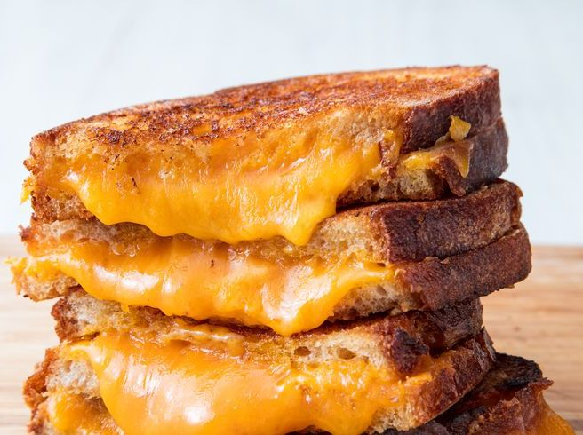

Grilled Cheese

Classic Grilled Cheese Sandwich
Either you're a deadbeat dad that went for cigarettes and never came back to your family, or you've needed to know how to make a grilled cheese. Whether you're making it for your kids or over a trashcan fire under a bridge, this recipe is bound to knock someone's socks off.
Ingredients
- 4 Slices, White Bread
- 3 Tbsp butter
- 2 Slices Cheddar Cheese
Directions
- Preheat skillet to medium heat
- Butter one side of bread and place on skillet butter side down, add a slice of cheese
- Butter another slice of bread and place butter side up on top of cheese
- Cook until browned on one side, flip and repeat
- Repeat wit remaining ingredients